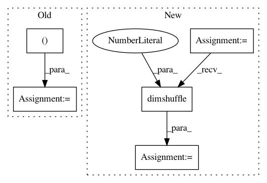

930f22933523259b1a152dc3174312357fb99fb9,tgen/nn.py,MaxPool1DLayer,connect,#MaxPool1DLayer#Any#,169
Before Change
def connect(self, inputs):
if self.stride > 1:
output = T.max(T.reshape(inputs,
(inputs.shape[0] / self.stride,
inputs.shape[1] * self.stride)),
axis=0)
else:
output = T.max(inputs, axis=0)
After Change
input_padded = T.shape_padright(inputs.dimshuffle(1, 0), 1)
// do the max-pooling
pooled = downsample.max_pool_2d(input_padded, (self.downscale_factor, 1), False)
// remove the padded dimension + swap dimensions back
output = pooled[:, :, 0].dimshuffle(1, 0)
self.inputs.append(inputs)
self.outputs.append(output)
return output
In pattern: SUPERPATTERN
Frequency: 4
Non-data size: 5
Instances
Project Name: UFAL-DSG/tgen
Commit Name: 930f22933523259b1a152dc3174312357fb99fb9
Time: 2015-06-15
Author: odusek@ufal.mff.cuni.cz
File Name: tgen/nn.py
Class Name: MaxPool1DLayer
Method Name: connect
Project Name: UFAL-DSG/tgen
Commit Name: 357d1611c7a222b55a5b4f2b3399bde14a9ac0ea
Time: 2015-05-27
Author: odusek@ufal.mff.cuni.cz
File Name: tgen/nn.py
Class Name: MaxPool1DLayer
Method Name: connect
Project Name: pymc-devs/pymc3
Commit Name: 52a00e981b6ace618694b0db160f0c8952ea941d
Time: 2017-05-22
Author: maxim.v.kochurov@gmail.com
File Name: pymc3/variational/test_functions.py
Class Name: RBF
Method Name: __call__
Project Name: pymc-devs/pymc3
Commit Name: 782035bbeeb080b5a33d1aeadb6b3f8e77d2ad75
Time: 2017-07-10
Author: maxim.v.kochurov@gmail.com
File Name: pymc3/tests/test_variational_inference.py
Class Name:
Method Name: test_flow_det